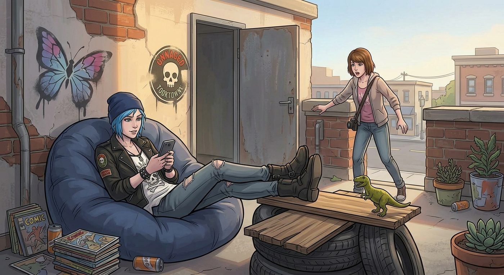

鳩佔鵲巢

一、合法逃課的天堂
天台開放沒多久,Chloe 就把這個地方,開發成了自己的新據點。
「妳今天第三節不是有課嗎?」某個週三下午,Max 推開天台的門,一眼就看到窩在懶骨頭沙發裡、翹著二郎腿滑手機的 Chloe。
「我這是心理調適,」Chloe 頭也不抬,理直氣壯,「這裡不是說任何情緒需要,都能隨時進來待著嗎?我這叫合法逃課,懂?」
Kate 端著澆花壺從溫室那頭走過來,聽到這話,忍不住失笑:「妳今天又遇到什麼『情緒需要』了?」
「太多了,」Chloe 誇張地嘆氣,掰著手指細數,「化學老師今天點名叫我『那位藍頭髮的』,不叫我全名,這是對我髮色的微侵害;食堂今天的薯條鹹度不均勻,左邊那盤明顯比右邊鹹,這對我的味覺造成了系統性壓迫;還有,體育課分組的時候,沒人主動選我,這是赤裸裸的社交排擠。」
Max 聽得哭笑不得:「妳這根本是在濫用這個空間的善意。」
「我這是行使我應有的權利,」Chloe 振振有詞,往沙發裡縮得更深,「一個健康的支持系統,本來就該包容各種層次的情緒需求,懂嗎?」
Kate 搖搖頭,顯然拿她沒轍,無奈地笑了笑:「這種等級的高階情緒病,恐怕已經超出我的功力範圍了,我這點半吊子的陪伴技巧,大概治不了妳。」她轉頭看向 Max,眼底帶著促狹的笑意,晃了晃手裡的澆花壺,「Max,要不要來幫我照顧一下溫室,反正這裡有個人,顯然是自己選擇要耍廢一下午的。」
「好啊。」Max 笑著點頭,轉身跟著 Kate 走向溫室那頭。
「喂!」Chloe 從沙發裡坐起身,一臉被拋棄的委屈,「妳們就這樣把我一個人丟在這?」
「妳不是說妳在『心理調適』嗎,」Max 頭也不回地擺擺手,「那就好好調適,別打擾我們工作。」
Chloe 癟嘴,重新躺回沙發裡,嘟囔了一句「這友情也太脆弱了吧」,卻也沒有真的追上去,只是心滿意足地窩在陽光灑落的角落,任由那股懶洋洋的午後愜意,把她重新拉進一場毫無罪惡感的、正大光明的午休。
二、殖民地
沒過幾天,Chloe 就把這個地方,從單純的「常客」,升級成了「殖民」。
某個週三下午,Max 推開天台的門,差點沒認出那個角落——原本樸素的懶骨頭沙發正上方,不知何時掛上了一塊手寫的木牌:「Chloe 專屬席位,擅動者死」。沙發旁的小茶几上,擺著一台貼滿骷髏貼紙的迷你冰箱,裡面塞滿了汽水和洋芋片;牆角那個裝著心理支持小卡片的木盒旁邊,詭異地多了一個手工做的「意見投訴箱」,裡面塞著幾張皺巴巴的紙條,字跡潦草地寫著諸如「食堂薯條鹹度不均」「體育課分組被忽視」之類的荒謬投訴。
Chloe 本人,則窩在專屬席位上,腿上橫著一把電吉他,頭上戴著耳機,自彈自唱,渾然不覺自己已經進來了。
「妳今天不是有課嗎?」Max 哭笑不得地問。
Chloe 摘下一邊耳機:「我這是心理調適,」她理直氣壯地繼續刷著和弦,「反正接了耳機,又沒吵到誰,合理範圍內的情緒抒發。」
三、Kate 的底線
正說著,Kate 端著澆花壺從溫室那頭走過來,目光掃過那塊「擅動者死」的木牌,又看到牆角那個山寨版投訴箱,臉上的表情肉眼可見地沉了下來。
「Chloe Price。」她的聲音一如既往地溫柔,語氣裡卻難得帶上了一絲不容置疑的認真。
Chloe 一個激靈,瞬間坐直了身體,耳機都顧不上摘,「呃……怎麼了?」
「這裡,」Kate 環顧一圈那些違和的裝飾,語氣依然平和,眼神卻異常堅定,「是給所有需要的學生準備的公共空間,不是妳一個人的地盤。這塊牌子,」她指了指那句「擅動者死」,「還有這個假投訴箱,我希望妳今天之內收起來。」
Chloe 對上她那雙難得認真起來的眼睛,原本的理直氣壯瞬間洩了氣,像被抓包的小學生一樣,飛快點頭:「……收,馬上收,這就收。」
她手忙腳亂地爬起來,一邊拆那塊木牌,一邊小聲嘟囔:「妳生氣的樣子,比 Victoria 還嚇人。」
「我沒生氣,」Kate 語氣恢復了一貫的溫柔,唇角甚至帶上一絲笑意,「我只是希望這裡,能一直是個真正屬於大家的地方。」
Max 站在一旁,看著 Chloe 手忙腳亂收拾違章建築的窘迫模樣,忍不住笑出聲。
「不過,」Kate 看了眼那台迷你冰箱和電吉他,想了想,語氣裡帶上一絲難得的縱容,「這些倒是可以留著,只要別太吵,也不要真的把這裡當自己家就好。」
Chloe 立刻鬆了口氣,像是撿回一條命,忙不迭點頭:「明白明白,絕對不會過分。」
Kate 笑著搖搖頭,轉身端著澆花壺,重新走回她的溫室。
Max 湊過去,幫忙拆下那個假投訴箱,忍不住調侃:「妳這鳩佔鵲巢的本事,也就在 Kate 面前才吃得了癟。」
「她那個笑容,」Chloe 心有餘悸地打了個哆嗦,把木牌塞進背包,「殺傷力比誰都大,老娘惹不起。」
風吹過天台,帶著花草的香氣,拂過那面寫滿了陌生學生留言與塗鴉的牆——某個角落,不知道是誰,用淡藍色的顏料,細細畫了一隻正展翅欲飛的蝴蝶。